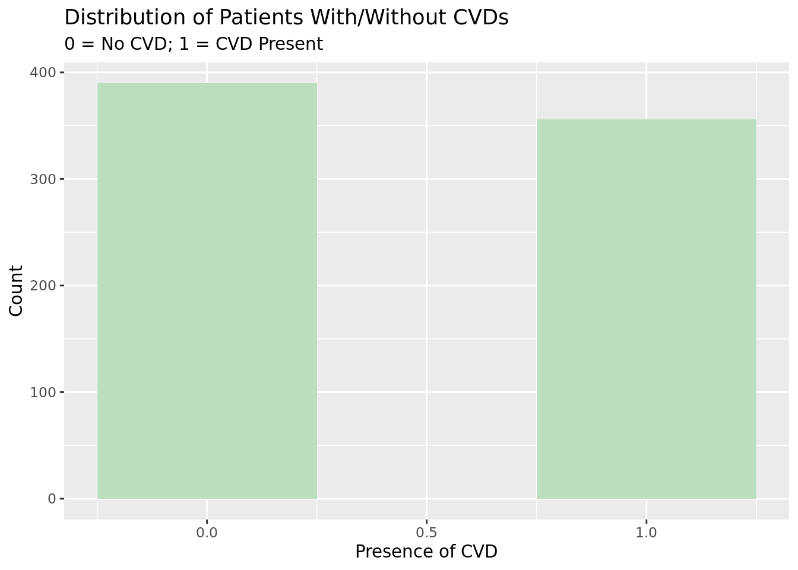

Cardiovascular diseases (CVDs) are the leading cause of death in the United States, with one person dying of the disease every 34 seconds (Centers for Disease Control and Prevention, 2022). Previous research has highlighted male gender, old age, obesity, abnormal cholesterol and fasting blood glucose as important predictors for CVDs, among many others (Damen et al., 2016).
As CVD incidence continues to soar, the need for an effective predictive model cannot be overstated. Such a model could enable doctors to take preventive measures, treat patients early, or encourage individuals at high risk to adopt lifestyle changes. In this report, we aim to construct a predictive model based on the “Heart Failure Prediction Dataset” by assessing the 11 possible predictors (including chest pain type, resting blood pressure, cholesterol levels, maximum heart rate, resting ECG measurements, etc.). Our research question is, which combination of these factors is most effective in predicting CVDs? In answering this question, we seek to enhance the scientific community’s understanding of CVDs and their associated risk factors, ultimately contributing to better prevention, early identification, and management of this critical disease for both individuals and populations.
Data Description
This “Heart Failure Prediction Dataset” includes 11 characteristics that can be utilized to anticipate the potential risk of a CVD; it is called “Heart Failure Prediction Dataset” because it is not uncommon for a CVD to lead to heart failure (Velagaleti et al., 2007). The dataset was formed by merging five heart-related datasets (the Cleveland, Hungarian, Switzerland, Long Beach VA, and Stalog Heart Datasets) based on their 11 common features.This dataset is currently the largest available heart disease dataset for research purposes, consisting of 918 observations.
Data Dictionary: Age: The age of the patient in years. Sex: The gender of the patient, identified as Male (M) or Female (F). ChestPainType: The type of chest pain experienced by the patient, classified as Typical Angina (TA), Atypical Angina (ATA), Non-Anginal Pain (NAP), or Asymptomatic (ASY). RestingBP: The resting blood pressure of the patient in mm Hg. Cholesterol: The level of serum cholesterol in mm/dL. FastingBS: The level of fasting blood sugar, indicated as 1 if FastingBS > 120 mg/dL and 0 otherwise. RestingECG: The results of the patient’s resting electrocardiogram, classified as Normal, having ST-T wave abnormality (T wave inversions and/or ST elevation or depression of > 0.05 mV), or showing probable or definite left ventricular hypertrophy by Estes’ criteria (LVH). MaxHR: The maximum heart rate achieved by the patient, measured in beats per minute (bpm) and ranging from 60 to 202. ExerciseAngina: Whether the patient experienced exercise-induced angina, identified as Yes (Y) or No (N). Oldpeak: The degree of ST depression induced by exercise relative to rest, measured in depression. ST_Slope: The slope of the peak exercise ST segment, classified as Up (upsloping), Flat (flat), or Down (downsloping). HeartDisease: The output class indicating the presence (1) or absence (0) of heart disease.
Age, RestingBP, Cholesterol, MaxHR, and Oldpeak are continuous variables. Sex, ChestPainType, FastingBS, RestingECG, ExerciseAngina, ST_Slope, and HeartDisease are categorical variables.
Loading required package: Matrix
Attaching package: 'Matrix'
The following objects are masked from 'package:tidyr':
expand, pack, unpack
Loaded glmnet 4.1-6
library(MASS)
Attaching package: 'MASS'
The following object is masked from 'package:dplyr':
select
Rows: 918 Columns: 12
── Column specification ────────────────────────────────────────────────────────
Delimiter: ","
chr (5): Sex, ChestPainType, RestingECG, ExerciseAngina, ST_Slope
dbl (7): Age, RestingBP, Cholesterol, FastingBS, MaxHR, Oldpeak, HeartDisease
ℹ Use `spec()` to retrieve the full column specification for this data.
ℹ Specify the column types or set `show_col_types = FALSE` to quiet this message.
At first glance, there seems to be no missingness in the dataset.
Upon closer examination, we discovered that 173 out of the 919 observations had a serum cholesterol level of 0 mm/dl. Since this is physiologically impossible, we concluded that these observations were actually missing cholesterol data. This meant that our dataset had missing values after all.
We decide to use complete case analysis because it is relatively easy to implement, and it can reduce bias in the estimates of the variable of interest when the missing data are missing completely at random or missing at random. Although a complete case analysis in this case would lead to a 20% sample loss, we believe that it is better than imputation because our current knowledge does not allow accurate prediction of cholesterol levels of these observations.
ggplot(data = data_new, aes(x = HeartDisease)) +geom_histogram(binwidth =0.5, fill ="#BCDEBF") +labs(title ="Distribution of Patients With/Without CVDs",subtitle ="0 = No CVD; 1 = CVD Present",x ="Presence of CVD",y ="Count")

The distribution of CVD in our data appears to be relatively evenly distributed between patients with and without the disease. This suggests that there are sufficient data available for both categories of the response variable to perform further statistical analysis and develop a predictive model.
Previous research has identified age, resting blood pressure, serum cholesterol, the presence of exercise-induced angina, and maximum heart rate as indicators of the presence of heart disease (Hajar, 2017). In addition, the type of chest pain (cp) is a significant factor in distinguishing between types of CVD. Therefore, we will include cp as a categorical predictor variable and conduct more exploratory data analysis on all these variables.
# A tibble: 4 × 3
Sex `No Heart Disease` `Heart Disease`
<chr> <chr> <int>
1 F 0 142
2 M 0 248
3 F 1 40
4 M 1 316
ggplot(data_new, aes(x = Age, y = HeartDisease, group = HeartDisease)) +geom_boxplot() +labs(title ="Age vs. Presence of CVD",x ="Age",y ="Presence of CVD") +theme_bw()
ggplot(data_new, aes(x = Cholesterol, y = HeartDisease, group = HeartDisease)) +geom_boxplot() +labs(title ="Cholesterol Distribution vs. Presence of CVD",x ="Serum cholestoral in mg/dl",y ="Presence of CVD") +theme_bw()
ggplot(data_new, aes(x = RestingBP, y = HeartDisease, group = HeartDisease)) +geom_boxplot() +labs(title ="Resting Blood Pressure vs. Presence of CVD",x ="Resting blood pressure (in mm Hg on admission to the hospital)",y ="Presence of CVD") +theme_bw()
`summarise()` has grouped output by 'FastingBS'. You can override using the
`.groups` argument.
ggplot(data_propbs, aes(x = FastingBS, y = Prop, fill =factor(HeartDisease))) +geom_col(position ="dodge") +scale_fill_manual(values =c("#C0E6C8", "#D9C0EA"), labels =c("No Heart Disease", "Heart Disease")) +labs(x ="0: Fasting BS < 120 mg/dl; 1: FastingBS > 120 mg/dl", y ="Proportion") +ggtitle("Normal/Abnormal Fasting Blood Sugar vs. Presence of CVD") +theme_bw()
From this graph, we can reasonably infer that a fasting blood sugar level over 120 mg/dl could be a predictor for CVDs; when participants’ fasting BS is below 120 mg/dl, there is a more even split between participants who have/do not have CVDs, wherein most of them do not have a CVD. However, for participants who have a fasting BS over 120 mg/dl, around 65% of them do have a CVD.
`summarise()` has grouped output by 'ExerciseAngina'. You can override using
the `.groups` argument.
ggplot(data_prop, aes(x = ExerciseAngina, y = Prop, fill =factor(HeartDisease))) +geom_col(position ="dodge") +scale_fill_manual(values =c("#C0E6C8", "#D9C0EA"), labels =c("No Heart Disease", "Heart Disease")) +labs(x ="Presence of Exercise-induced Angina", y ="Proportion") +ggtitle("Presence of Exercise-induced Angina vs. Presence of CVD") +theme_bw()
Over 80% of patients with exercise-induced angina have CVD, whereas only around 25% of patients without exercise-induced angina have CVD. Therefore, exercise-induced angina could be an important predictor for CVDs.
`summarise()` has grouped output by 'Sex'. You can override using the `.groups`
argument.
ggplot(data_props, aes(x = Sex, y = Prop, fill =factor(HeartDisease))) +geom_col(position ="dodge") +scale_fill_manual(values =c("#C0E6C8", "#D9C0EA"), labels =c("No Heart Disease", "Heart Disease")) +labs(x ="Sex", y ="Proportion") +ggtitle("Sex vs. Presence of CVD") +theme_bw()
There seems to be a sex difference in the prevalence of CVDs. There is a nearly even split between men who do/do not have a CVD; about 45% of the men do not have a CVD, while about 55% of them do. However, just over 20% of the women in this dataset have a CVD.
Methodology
This section includes a brief description of your modeling process. Explain the reasoning for the type of model you’re fitting, predictor variables considered for the model including any interactions. Additionally, show how you arrived at the final model by describing the model selection process, interactions considered, variable transformations (if needed), assessment of conditions and diagnostics, and any other relevant considerations that were part of the model fitting process.
Grading criteria The analysis steps are appropriate for the data and research question. The group used a thorough and careful approach to select the final model; the approach is clearly described in the report. The model selection process was reasonable, and addressed any violations in model conditions were discussed and/or fixed. The model conditions and diagnostics are thoroughly and accurately assessed for their model. If violations of model conditions are still present, there was a reasonable attempt to address the violations based on the course content.
Using LASSO for variable selection
y <- data_new$HeartDiseasex <-model.matrix(HeartDisease ~ ., data = data)m_lasso_cv <-cv.glmnet(x, y, alpha =1)best_lambda <- m_lasso_cv$lambda.minm_best <-glmnet(x, y, alpha =1, lambda = best_lambda)m_best$beta
Why all subset? Maybe all of the predictors seem to make sense, we don’t want to select manually based on literature
#11 has the lowest CP score (need to explain what cp means!and why we select based on cp score) 11: Age, sex, chest pain, resting bp, fasting bs, exercise angina, old peak, ST slope. did not choose: cholesterol, resting ecg, max hr
Need to figure out what old peak means, explain exercise angina, and ST slope.
#cholesterol Research suggests that low-density lipoprotein cholesterol (LDL-C, the “bad” cholesterol) is not the best predictor of risk for a major coronary event in people who are generally healthy otherwise.
#resting ecg The variable “RestingECG” may not be the best predictor of heart disease because it is only measuring the resting electrocardiogram results. Many people with heart disease may have a normal resting electrocardiogram, while others without heart disease may show abnormalities in their resting electrocardiogram. In contrast, other variables in the dataset, such as “ExerciseAngina” and “Oldpeak”, are more directly related to the physiological response to exercise, which can be a stronger predictor of heart disease. Additionally, “RestingECG” only provides information about the electrical activity of the heart at rest, while “ExerciseAngina” provides information about the heart’s response to physical stress, which can be a more sensitive indicator of heart disease.
#max hr Max heart rate is not the best predictor of heart disease because it is highly confounded by age. As we age, our maximum heart rate decreases, so older individuals will have lower maximum heart rates even if they are healthy.
#exercise angina Exercise-induced angina refers to chest pain or discomfort that occurs during physical activity, such as exercise, and is usually a result of reduced blood flow to the heart. It can be a symptom of underlying heart disease, such as coronary artery disease, which can be caused by the buildup of plaque in the arteries that supply the heart with blood. Therefore, the presence or absence of exercise-induced angina can be a useful diagnostic tool in identifying individuals at risk for or already suffering from heart disease.
#old peak The variable “Oldpeak” refers to the ST segment depression induced by exercise relative to rest. It is a numeric variable that measures the difference in the ST segment of an electrocardiogram (ECG) before and after exercise. A positive value of Oldpeak indicates that the ST segment is depressed during exercise compared to at rest, which can be a sign of ischemia (insufficient blood flow) to the heart. The greater the magnitude of the depression, the more severe the ischemia. Therefore, Oldpeak is a useful predictor of the likelihood of heart disease and can be used in models to predict the risk of heart failure.
#st slope The variable “ST_Slope” makes sense to include, as the ST segment exercise test, is one of the most widely used tests to screen for CVDs. Either depression (horizontal or downsloping) in the slope often suggests presence of CAD and warrants further management (Lim, 2016).
#the 4 interactions that i added Age and Sex: Studies have shown that the relationship between age and heart disease risk may differ by sex, with women generally having a later onset of heart disease compared to men.
Chest Pain Type and Sex: Some studies suggest that there may be differences in the way men and women experience chest pain during a heart attack, which could potentially impact the predictive power of chest pain type in a heart disease model.
Exercise Angina and Oldpeak: Exercise-induced angina and ST depression during exercise are both markers of ischemia (reduced blood flow to the heart), and may therefore be related to each other in predicting heart disease risk.
Oldpeak and ST Slope: The shape of the ST segment during exercise can be indicative of different types of ischemia, and may therefore have a complex relationship with the severity of heart disease risk as measured by the degree of ST depression (Oldpeak).
Model attempts
m1 <-glm(HeartDisease ~ Age + Sex + ChestPainType + RestingBP + FastingBS + ExerciseAngina + Oldpeak + ST_Slope, data = data_new,family ="binomial")tidy(m1)
Analysis of Deviance Table
Model 1: HeartDisease ~ Age + Sex + ChestPainType + ExerciseAngina + +Oldpeak +
ST_Slope
Model 2: HeartDisease ~ Age + Sex + ChestPainType + RestingBP + Cholesterol +
FastingBS + RestingECG + MaxHR + ExerciseAngina + Oldpeak +
ST_Slope
Resid. Df Resid. Dev Df Deviance Pr(>Chi)
1 736 490.74
2 730 483.58 6 7.1638 0.306
The p-value is 0.306 (>0.05 significance level) indicates that there is not enough evidence to reject the null hypothesis that all of the slopes corresponding to the 3 eliminated terms (Cholesterol, RestingECG, MaxHR) are zero. Therefore, there is not enough evidence to conclude that the model with all predictors is significantly better than the model we created through all subset selection. We would even prefer to use the simpler Model 2 (that we came up with through all subset selection) over the more complex Model 3 (which includes all of the predictors), as it has fewer variables and is easier to interpret.
This is where you will output the final model with any relevant model fit statistics. Describe the key results from the model. The goal is not to interpret every single variable in the model but rather to show that you are proficient in using the model output to address the research questions, using the interpretations to support your conclusions. Focus on the variables that help you answer the research question and that provide relevant context for the reader.
Grading criteria The model fit is clearly assessed, and interesting findings from the model are clearly described. Interpretations of model coefficients are used to support the key findings and conclusions, rather than merely listing the interpretation of every model coefficient. If the primary modeling objective is prediction, the model’s predictive power is thoroughly assessed.
Discussion
In this section you’ll include a summary of what you have learned about your research question along with statistical arguments supporting your conclusions. In addition, discuss the limitations of your analysis and provide suggestions on ways the analysis could be improved. Any potential issues pertaining to the reliability and validity of your data and appropriateness of the statistical analysis should also be discussed here. Lastly, this section will include ideas for future work.
#Summary Our model identified the main predictors for cardiovascular disease in this dataset and quantified their impact on the likelihood of having the disease. We found that traditional factors such as [cholesterol and blood pressure] lose their predictive power when richer data is available, such as [fluoroscopy and electrocardiogram results, presence of other diseases, chest pain, and exercise tests].
#What we’ve learned about our research question - newer research is emerging, some of the metrics that we commonly think of as highly predictive actually aren’t that good (can use cholesterol as an example) –> After identifying 172 data points with zero cholesterol levels, which is biologically implausible, we opted to exclude them from our study. Nonetheless, we noticed that these eliminated observations had a greater probability of presenting CVD than the average in the complete dataset. Therefore, the exclusion of these data points may have decreased the reliability of our analysis by reducing the sample size from 918 to 746, which could have introduced bias into our results. The validity of our study might be compromised due to the exclusion of this relevant information.
#Limitations and Improvements Our analysis is limited due to the non-representativeness of the dataset, which only includes individuals admitted to hospitals for heart disease-related conditions. As a result, our findings cannot be generalized to the broader population. To address this limitation, future studies should aim to expand the sample size and include a more diverse population to enhance the generalizability of the results. Additionally, we suggest that future research should focus on developing predictive models for heart disease in the general population by collecting data from the general population, as early detection can facilitate lifestyle changes or prompt timely treatment.
#Limitations of our analysis - better ways we couldve done it?
#talk about how the variables were already narrowed down, making it hard for us It is important to emphasize that the list of 11 variables under consideration in this study has been narrowed down by researchers from a list of 76, involving several previous research studies to confirm this cut. As a result, further reduction of these variables from a model including all 11 variables could be somewhat challenging.
Citations: Centers for Disease Control and Prevention, National Center for Health Statistics. About Multiple Cause of Death, 1999–2020. CDC WONDER Online Database website. Atlanta, GA: Centers for Disease Control and Prevention; 2022. Accessed May 1, 2023.
Damen, J. A., Hooft, L., Schuit, E., Debray, T. P., Collins, G. S., Tzoulaki, I., Lassale, C. M., Siontis, G. C., Chiocchia, V., Roberts, C., Schlüssel, M. M., Gerry, S., Black, J. A., Heus, P., van der Schouw, Y. T., Peelen, L. M., & Moons, K. G. (2016). Prediction models for cardiovascular disease risk in the general population: systematic review. BMJ (Clinical research ed.), 353, i2416. https://doi.org/10.1136/bmj.i2416
Downs, J. R., Clearfield, M., Weis, S., Whitney, E., Shapiro, D. R., Beere, P. A., Langendorfer, A., Stein, E. A., Kruyer, W., & Gotto, A. M., Jr (1998). Primary prevention of acute coronary events with lovastatin in men and women with average cholesterol levels: results of AFCAPS/TexCAPS. Air Force/Texas Coronary Atherosclerosis Prevention Study. JAMA, 279(20), 1615–1622. https://doi.org/10.1001/jama.279.20.1615
Lim, Y. C., Teo, S. G., & Poh, K. K. (2016). ST-segment changes with exercise stress. Singapore medical journal, 57(7), 347–353. https://doi.org/10.11622/smedj.2016116
Velagaleti, R. S., & Vasan, R. S. (2007). Heart failure in the twenty-first century: is it a coronary artery disease or hypertension problem?. Cardiology clinics, 25(4), 487–v. https://doi.org/10.1016/j.ccl.2007.08.010